<!DOCTYPE html>


<html lang="zh-CN">


<head>
  <meta name="baidu-site-verification" content="codeva-NSg7ynviLa" />
  <meta charset="utf-8" />
    
  <meta name="viewport" content="width=device-width, initial-scale=1, maximum-scale=1" />
  <title>
    绘制流程图 |  
  </title>
  <meta name="generator" content="hexo-theme-ayer">
  
  <link rel="shortcut icon" href="/images/mojie.jpg" />
  
  
<link rel="stylesheet" href="/dist/main.css">

  <link rel="stylesheet" href="https://cdn.jsdelivr.net/gh/Shen-Yu/cdn/css/remixicon.min.css">
  
<link rel="stylesheet" href="/css/custom.css">

  
  <script src="https://cdn.jsdelivr.net/npm/pace-js@1.0.2/pace.min.js"></script>
  
  

  

<link rel="alternate" href="/atom.xml" title="null" type="application/atom+xml">
</head>

</html>

<body>
  <div id="app">
    
      
    <main class="content on">
      <section class="outer">
  <article
  id="post-绘制流程图"
  class="article article-type-post"
  itemscope
  itemprop="blogPost"
  data-scroll-reveal
>
  <div class="article-inner">
    
    <header class="article-header">
       
<h1 class="article-title sea-center" style="border-left:0" itemprop="name">
  绘制流程图
</h1>
 

    </header>
     
    <div class="article-meta">
      <a href="/posts/6e34f240/" class="article-date">
  <time datetime="2026-06-12T06:01:43.000Z" itemprop="datePublished">2026-06-12</time>
</a>   
<div class="word_count">
    <span class="post-time">
        <span class="post-meta-item-icon">
            <i class="ri-quill-pen-line"></i>
            <span class="post-meta-item-text"> 字数统计:</span>
            <span class="post-count">4.3k</span>
        </span>
    </span>

    <span class="post-time">
        &nbsp; | &nbsp;
        <span class="post-meta-item-icon">
            <i class="ri-book-open-line"></i>
            <span class="post-meta-item-text"> 阅读时长≈</span>
            <span class="post-count">16 分钟</span>
        </span>
    </span>
</div>
 
    </div>
      
    <div class="tocbot"></div>


  
    <div class="article-entry" itemprop="articleBody">
       
  <link rel="stylesheet" type="text/css" href="https://cdn.jsdelivr.net/hint.css/2.4.1/hint.min.css"><p>绘制流程图笔记，用 mermaid 语法可以用代码生成流程图，完美。</p>
<span id="more"></span>
<h1>流程图基础</h1>
<p>内容主要参考网址1，详细见其网址。</p>
<p>一个简单的流程图，使用流程、判定、开始（结束）就够了。我看开始和结束很多时候都会省略（因为这两个内容往往只是写 “开始” / “结束”、“Start” / “End”，表示流程开始和结束，本身没有含义）。</p>
<p>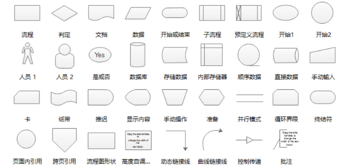</p>
<p>流程元素不必说了，不过我感觉就是将其从直角矩形改为圆角矩形更好看一点（4个角改为弧形）。</p>
<h2 id="判定元素的结构">判定元素的结构</h2>
<p>判定元素可以作为 IF 判断，如下图（图来自网址1）</p>
<p>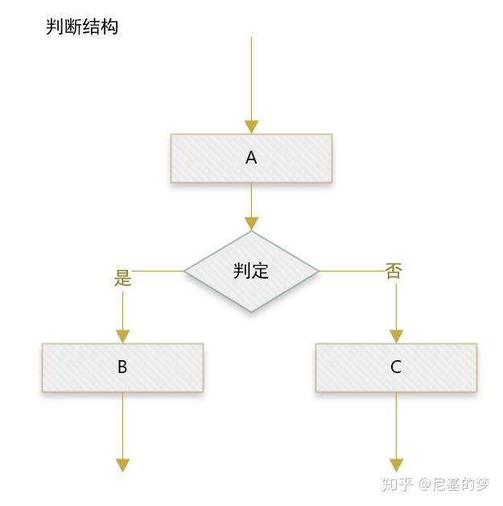</p>
<p>循环结构：若判定为是，继续执行主流程，若判定为否，重复执行上一步流程。直到判定为是，否则一直重复执行A，然后判定。</p>
<p>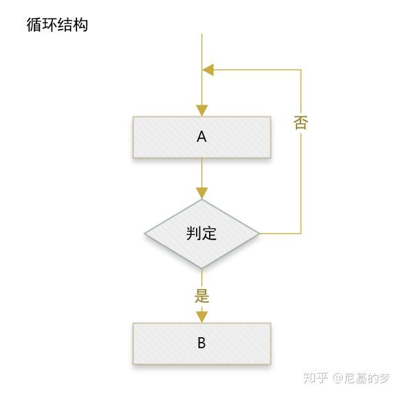</p>
<p>回形结构，是循环结构的变体（把“是”和“否”的流程对换），意思是一直执行A直到判定为否。</p>
<p>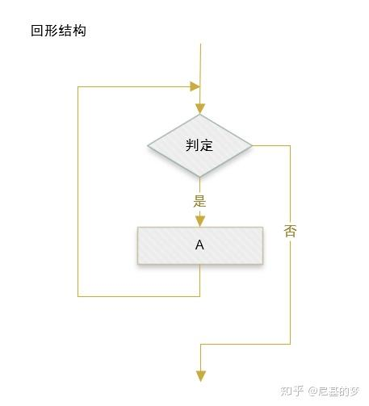</p>
<h2 id="固定规范">固定规范</h2>
<p>元素有固定的表达，如何去布置这些元素也有一套规范。</p>
<ul>
<li>
<p>主流程用直线表达。如果结构是竖型就是一条直线，横型就是一条横线。不要歪七倒八。符合从左到右，从上到下的顺序。</p>
</li>
<li>
<p>并行的操作关系要对齐（见上图判断结构）。</p>
</li>
<li>
<p><strong>单入单出</strong>。为避免混乱和歧义，同一个流程只有一个箭头进入，一个箭头出去。（只有判定框可以有多个箭头出去。）</p>
<p>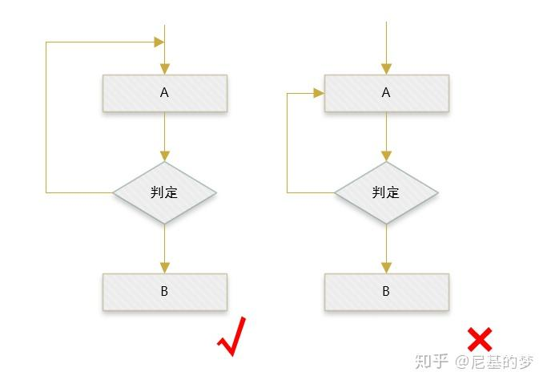</p>
</li>
<li>
<p>判定流程中，是/否的位置取决于哪方处于主流程上。</p>
<p>通常“是/Y”位于直线上。</p>
<p>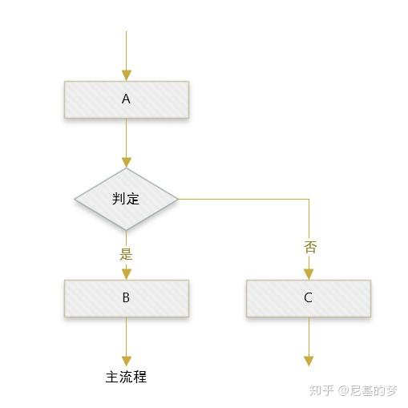</p>
<p>但有时候“否/N”才表达主要流程。例如这张疫情隔离说明图。</p>
<p>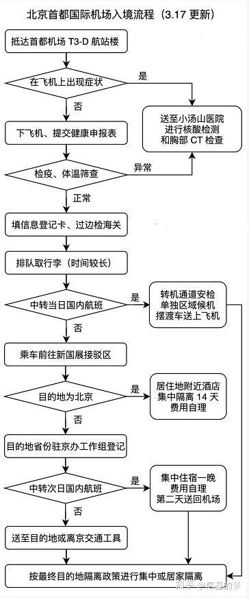</p>
</li>
<li>
<p>一个流程只有一个开始。可以有一个结束或者多个结束，或者省略结束。</p>
</li>
<li>
<p>同一路径符（线条）只有一个箭头。且避免与其他路径交叉。</p>
</li>
<li>
<p>字号图形大小一致。</p>
</li>
</ul>
<h1>Excel 绘制流程图</h1>
<p>就是从“插入” - “性状” 里选择需要的元素，需要这里箭头只有上下左右的方向，不能倾斜（转方向，比如指向右下角）。所以要采用线条这里的箭头，在“性状格式” - “形状轮廓” - “粗细” 这里可以调节线条的粗细，调大一点这个值可以做到和下面的箭头差不多的效果。</p>
<p>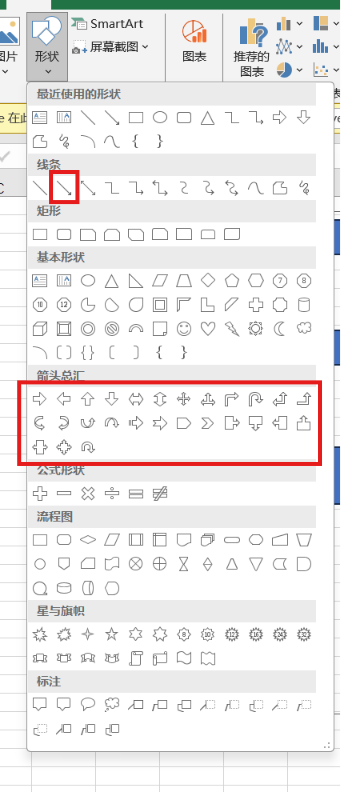</p>
<p>弄完以后，选中整个流程图的元素，然后点击“性状格式“的组合，将其组合为一个元素。</p>
<p>将其保存为图片的教程见网页2，过程如下</p>
<p>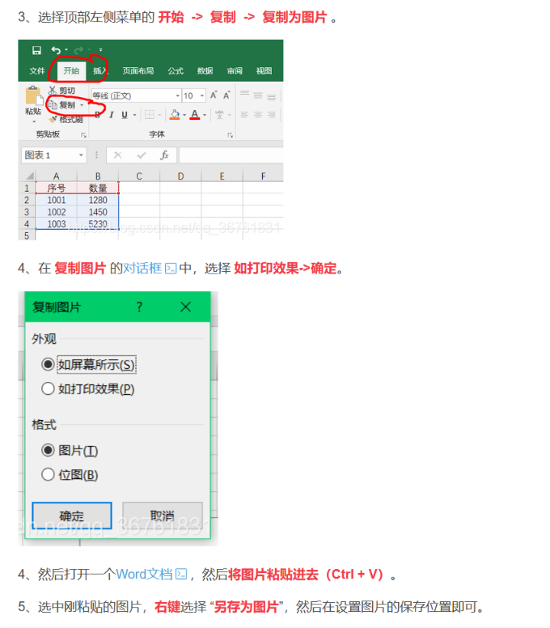</p>
<p>感觉效果不太行</p>
<h1>文字转流程图 - Mermaid 语法</h1>
<p>Mermaid 语法是一种<strong>基于文本的、声明式的图表描述语言</strong>，它的设计目标是让用户像写 Markdown 一样，用简单直观的文本代码自动生成流程图、序列图、甘特图、类图等各种图表。你不需要拖拽图形或调整布局，只需专注于描述图表元素之间的逻辑关系，Mermaid 引擎就会自动渲染出专业美观的矢量图。</p>
<h2 id="快速了解">快速了解</h2>
<h3 id="🎯-核心特点">🎯 核心特点</h3>
<ul>
<li><strong>纯文本</strong>：所有图表定义都写在纯文本文件中（如 <code>.md</code> 文件或 Mermaid Live 编辑器）。</li>
<li><strong>自动排版</strong>：无需手动对齐或连线，引擎根据代码自动计算布局。</li>
<li><strong>版本控制友好</strong>：文本格式便于 Git 跟踪差异、协作和代码审查。</li>
<li><strong>跨平台</strong>：GitHub、GitLab、Notion、Obsidian 等众多平台原生支持渲染 Mermaid 代码块。</li>
<li><strong>多种图表类型</strong>：支持流程图、时序图、类图、状态图、实体关系图、用户旅程图、甘特图、思维导图等数十种图表。</li>
</ul>
<h3 id="📝-教程">📝 教程</h3>
<p>下面是一段生成流程图的 Mermaid 代码及其效果（文字描述）：</p>
<figure class="highlight plaintext"><table><tr><td class="gutter"><pre><span class="line">1</span><br><span class="line">2</span><br><span class="line">3</span><br><span class="line">4</span><br><span class="line">5</span><br></pre></td><td class="code"><pre><span class="line">graph TD</span><br><span class="line">    A[开始] --&gt; B&#123;是否登录?&#125;</span><br><span class="line">    B --&gt;|是| C[进入主页]</span><br><span class="line">    B --&gt;|否| D[跳转登录页]</span><br><span class="line">    D --&gt; A</span><br></pre></td></tr></table></figure>
<p>盯着它看 30 秒，建立直觉：</p>
<ul>
<li><code>graph TD</code>= “我要画流程图，方向从上到下”</li>
<li><code>A[文字]</code>= 一个方框，显示文字“开始”。</li>
<li><code>A --&gt; B</code>= 箭头</li>
<li><code>B&#123;是否登录?&#125;</code>= 菱形判断框</li>
<li><code>|是|</code>= 箭头上的标签</li>
</ul>
<p>图的方向除了 TD ，还有下面的类型（这里 TB 和 TD 是一样的，均是从上到下）</p>
<table>
<thead>
<tr>
<th style="text-align:left"><strong>写法</strong></th>
<th style="text-align:left"><strong>缩写全称</strong></th>
<th style="text-align:left"><strong>中文直觉</strong></th>
<th style="text-align:left"><strong>箭头主方向</strong></th>
</tr>
</thead>
<tbody>
<tr>
<td style="text-align:left"><strong>TB</strong></td>
<td style="text-align:left"><strong>T</strong>op → <strong>B</strong>ottom</td>
<td style="text-align:left">上 → 下</td>
<td style="text-align:left">↓</td>
</tr>
<tr>
<td style="text-align:left"><strong>TD</strong></td>
<td style="text-align:left"><strong>T</strong>op → <strong>D</strong>own</td>
<td style="text-align:left">上 → 下</td>
<td style="text-align:left">↓</td>
</tr>
<tr>
<td style="text-align:left"><strong>BT</strong></td>
<td style="text-align:left"><strong>B</strong>ottom → <strong>T</strong>op</td>
<td style="text-align:left">下 → 上</td>
<td style="text-align:left">↑</td>
</tr>
<tr>
<td style="text-align:left"><strong>LR</strong></td>
<td style="text-align:left"><strong>L</strong>eft → <strong>R</strong>ight</td>
<td style="text-align:left">左 → 右</td>
<td style="text-align:left">→</td>
</tr>
<tr>
<td style="text-align:left"><strong>RL</strong></td>
<td style="text-align:left"><strong>R</strong>ight → <strong>L</strong>eft</td>
<td style="text-align:left">右 → 左</td>
<td style="text-align:left">←</td>
</tr>
</tbody>
</table>
<h4 id="节点">节点</h4>
<p>这里的 A、B、C在 Mermaid 里不是什么神秘代号，就是&quot;节点 ID&quot;（node id）——你可以理解为给每个框起的&quot;变量名&quot;，用来在代码里引用它、连线它。</p>
<p>记住下面的表格，这是常用的节点形状。</p>
<table>
<thead>
<tr>
<th style="text-align:left"><strong>写法</strong></th>
<th style="text-align:left"><strong>形状</strong></th>
<th style="text-align:left"><strong>含义</strong></th>
</tr>
</thead>
<tbody>
<tr>
<td style="text-align:left"><code>id1[文字]</code></td>
<td style="text-align:left">□ 矩形</td>
<td style="text-align:left">普通处理步骤</td>
</tr>
<tr>
<td style="text-align:left"><code>id1(文字)</code></td>
<td style="text-align:left">⬜ 圆角矩形</td>
<td style="text-align:left"><strong>开始 / 结束</strong></td>
</tr>
<tr>
<td style="text-align:left"><code>id1&#123;文字&#125;</code></td>
<td style="text-align:left">◆ 菱形</td>
<td style="text-align:left"><strong>判断 / 条件</strong></td>
</tr>
<tr>
<td style="text-align:left"><code>id1((文字))</code></td>
<td style="text-align:left">○ 圆形</td>
<td style="text-align:left">连接点 / 锚点</td>
</tr>
<tr>
<td style="text-align:left"><code>id1[/文字/]</code></td>
<td style="text-align:left">▱ 平行四边形</td>
<td style="text-align:left">输入 / 输出</td>
</tr>
<tr>
<td style="text-align:left"><strong>id1([文字])</strong></td>
<td style="text-align:left"><strong>⬜ 圆角矩形</strong></td>
<td style="text-align:left"><strong>也是开始/结束（另一种写法）</strong></td>
</tr>
</tbody>
</table>
<h4 id="边-箭头和线">边(箭头和线)</h4>
<p>基本语法如下，基本上用的是<code>--&gt;</code> 。</p>
<table>
<thead>
<tr>
<th style="text-align:left"><strong>线型</strong></th>
<th style="text-align:left"><strong>有箭头</strong></th>
<th style="text-align:left"><strong>无箭头</strong></th>
<th style="text-align:left"><strong>读法</strong></th>
</tr>
</thead>
<tbody>
<tr>
<td style="text-align:left"><strong>实线</strong></td>
<td style="text-align:left"><code>--&gt;</code></td>
<td style="text-align:left"><code>---</code></td>
<td style="text-align:left">普通依赖</td>
</tr>
<tr>
<td style="text-align:left"><strong>虚线</strong></td>
<td style="text-align:left"><code>-.-&gt;</code></td>
<td style="text-align:left"><code>-.-</code></td>
<td style="text-align:left">辅助/参考关系</td>
</tr>
<tr>
<td style="text-align:left"><strong>粗线</strong></td>
<td style="text-align:left"><code>==&gt;</code></td>
<td style="text-align:left"><code>===</code></td>
<td style="text-align:left">强调主流程</td>
</tr>
</tbody>
</table>
<p>为连接线添加文本标签，语法如下</p>
<table>
<thead>
<tr>
<th>语法</th>
<th>类型</th>
<th>示例</th>
</tr>
</thead>
<tbody>
<tr>
<td><code>-- 文字 --&gt;</code></td>
<td><strong>实线箭头 + 文本</strong></td>
<td>A – 是 --&gt; B</td>
</tr>
<tr>
<td><code>-- 文字 ---</code></td>
<td><strong>无箭头实线 + 文本</strong></td>
<td>A – 否 — B</td>
</tr>
<tr>
<td><code>== 文字 ==&gt;</code></td>
<td><strong>粗线 + 文本</strong></td>
<td>A == 确认 ==&gt; B</td>
</tr>
<tr>
<td><code>-. 文字 .-&gt;</code></td>
<td><strong>虚线 + 文本</strong></td>
<td>A -. 可选 .-&gt; B</td>
</tr>
</tbody>
</table>
<p>另一种写法是如下（不推荐，不如第一种可读性强）</p>
<figure class="highlight plaintext"><table><tr><td class="gutter"><pre><span class="line">1</span><br><span class="line">2</span><br></pre></td><td class="code"><pre><span class="line">flowchart LR</span><br><span class="line">    A--&gt;|文本|B</span><br></pre></td></tr></table></figure>
<p><strong>边的等级</strong></p>
<p>流程图中的每个节点最终在呈现图中分配到一个等级，即垂直或横向水平（根据流程图的定向），基于与其链接的节点。默认情况下，链接可以跨越任意数量的等级，但您可以要求任何链接比其他链接更长，通过在链接定义中添加额外的破折号。</p>
<p>在下面的例子中，链接从节点 B 到节点 E 添加了两个额外的破折号，因此它跨度比常规链接多两个等级：</p>
<figure class="highlight plaintext"><table><tr><td class="gutter"><pre><span class="line">1</span><br><span class="line">2</span><br><span class="line">3</span><br><span class="line">4</span><br><span class="line">5</span><br><span class="line">6</span><br></pre></td><td class="code"><pre><span class="line">flowchart TD</span><br><span class="line">    A[开始] --&gt; B&#123;是否是?&#125;</span><br><span class="line">    B --&gt;|是| C[好的]</span><br><span class="line">    C --&gt; D[重新考虑]</span><br><span class="line">    D --&gt; B</span><br><span class="line">    B ----&gt;|否| E[结束]</span><br></pre></td></tr></table></figure>
<p>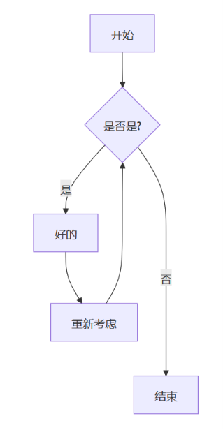</p>
<p>当链接标签写在链接的中间时，额外的破折号必须添加在链接的右侧。以下示例等同于前一个示例：</p>
<figure class="highlight plaintext"><table><tr><td class="gutter"><pre><span class="line">1</span><br><span class="line">2</span><br><span class="line">3</span><br><span class="line">4</span><br><span class="line">5</span><br><span class="line">6</span><br></pre></td><td class="code"><pre><span class="line">flowchart TD</span><br><span class="line">    A[开始] --&gt; B&#123;是否是?&#125;</span><br><span class="line">    B -- 是 --&gt; C[好的]</span><br><span class="line">    C --&gt; D[重新考虑]</span><br><span class="line">    D --&gt; B</span><br><span class="line">    B -- 否 ----&gt; E[结束]</span><br></pre></td></tr></table></figure>
<p>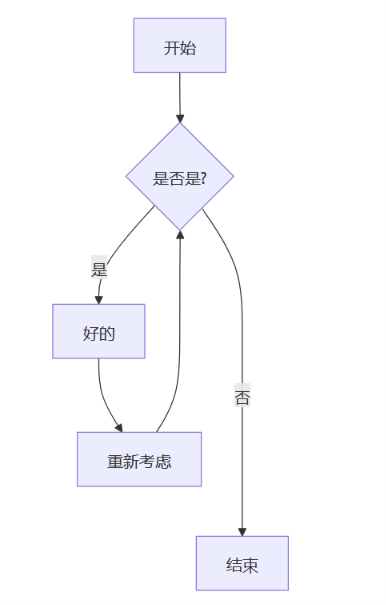</p>
<p>对于虚线或粗线链接，需要添加的字符是等号或点，如下表所示：</p>
<table>
<thead>
<tr>
<th>长度</th>
<th style="text-align:center">1</th>
<th style="text-align:center">2</th>
<th style="text-align:center">3</th>
</tr>
</thead>
<tbody>
<tr>
<td>正常</td>
<td style="text-align:center"><code>---</code></td>
<td style="text-align:center"><code>----</code></td>
<td style="text-align:center"><code>-----</code></td>
</tr>
<tr>
<td>带箭头正常</td>
<td style="text-align:center"><code>--&gt;</code></td>
<td style="text-align:center"><code>---&gt;</code></td>
<td style="text-align:center"><code>----&gt;</code></td>
</tr>
<tr>
<td>粗线</td>
<td style="text-align:center"><code>===</code></td>
<td style="text-align:center"><code>====</code></td>
<td style="text-align:center"><code>=====</code></td>
</tr>
<tr>
<td>带箭头的粗线</td>
<td style="text-align:center"><code>==&gt;</code></td>
<td style="text-align:center"><code>===&gt;</code></td>
<td style="text-align:center"><code>====&gt;</code></td>
</tr>
<tr>
<td>虚线</td>
<td style="text-align:center"><code>-.-</code></td>
<td style="text-align:center"><code>-..-</code></td>
<td style="text-align:center"><code>-...-</code></td>
</tr>
<tr>
<td>带箭头的虚线</td>
<td style="text-align:center"><code>-.-&gt;</code></td>
<td style="text-align:center"><code>-..-&gt;</code></td>
<td style="text-align:center"><code>-...-&gt;</code></td>
</tr>
</tbody>
</table>
<h4 id="子图">子图</h4>
<p>语法为，第一行 <code>subgraph</code> 后面是标题（如果有空格，要使用方括号包裹，如<code>[子图标题]</code>），会显示在子图上方中央位置。中间是图画的内容</p>
<figure class="highlight plaintext"><table><tr><td class="gutter"><pre><span class="line">1</span><br><span class="line">2</span><br><span class="line">3</span><br></pre></td><td class="code"><pre><span class="line">subgraph title</span><br><span class="line">    graph definition</span><br><span class="line">end</span><br></pre></td></tr></table></figure>
<p>示例为</p>
<figure class="highlight plaintext"><table><tr><td class="gutter"><pre><span class="line">1</span><br><span class="line">2</span><br><span class="line">3</span><br><span class="line">4</span><br><span class="line">5</span><br><span class="line">6</span><br><span class="line">7</span><br><span class="line">8</span><br><span class="line">9</span><br><span class="line">10</span><br><span class="line">11</span><br></pre></td><td class="code"><pre><span class="line">flowchart TB</span><br><span class="line">    c1--&gt;a2</span><br><span class="line">    subgraph one</span><br><span class="line">    a1--&gt;a2</span><br><span class="line">    end</span><br><span class="line">    subgraph two</span><br><span class="line">    b1--&gt;b2</span><br><span class="line">    end</span><br><span class="line">    subgraph three</span><br><span class="line">    c1--&gt;c2</span><br><span class="line">    end</span><br></pre></td></tr></table></figure>
<p>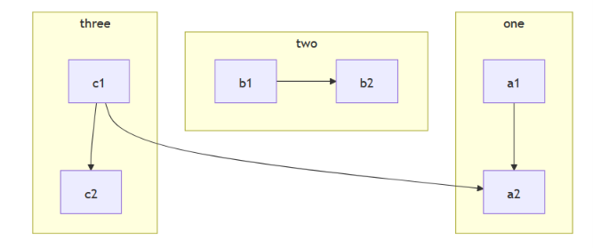</p>
<p>子图的一个强大特性是<strong>可以拥有完全独立于主流程的内部布局方向</strong>。你可以通过在子图内部声明 <code>direction</code> 来覆盖外层的布局设定。</p>
<figure class="highlight plaintext"><table><tr><td class="gutter"><pre><span class="line">1</span><br><span class="line">2</span><br><span class="line">3</span><br><span class="line">4</span><br><span class="line">5</span><br><span class="line">6</span><br><span class="line">7</span><br><span class="line">8</span><br><span class="line">9</span><br><span class="line">10</span><br><span class="line">11</span><br><span class="line">12</span><br><span class="line">13</span><br><span class="line">14</span><br><span class="line">15</span><br></pre></td><td class="code"><pre><span class="line">flowchart LR</span><br><span class="line">  subgraph TOP</span><br><span class="line">    direction TB</span><br><span class="line">    subgraph B1</span><br><span class="line">        direction RL</span><br><span class="line">        i1 --&gt;f1</span><br><span class="line">    end</span><br><span class="line">    subgraph B2</span><br><span class="line">        direction BT</span><br><span class="line">        i2 --&gt;f2</span><br><span class="line">    end</span><br><span class="line">  end</span><br><span class="line">  A --&gt; TOP --&gt; B</span><br><span class="line">  B1 --&gt; B2</span><br><span class="line"></span><br></pre></td></tr></table></figure>
<p>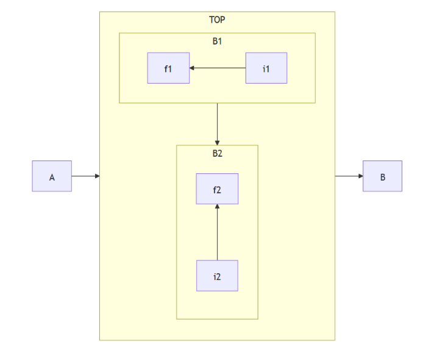</p>
<p>注意：<strong>如果子图的任何节点与外部链接，子图方向将被忽略。相反，子图将继承父图的方向：</strong></p>
<figure class="highlight plaintext"><table><tr><td class="gutter"><pre><span class="line">1</span><br><span class="line">2</span><br><span class="line">3</span><br><span class="line">4</span><br><span class="line">5</span><br><span class="line">6</span><br><span class="line">7</span><br><span class="line">8</span><br><span class="line">9</span><br><span class="line">10</span><br><span class="line">11</span><br><span class="line">12</span><br><span class="line">13</span><br><span class="line">14</span><br><span class="line">15</span><br><span class="line">16</span><br><span class="line">17</span><br></pre></td><td class="code"><pre><span class="line">flowchart LR</span><br><span class="line">    subgraph subgraph1</span><br><span class="line">        direction TB</span><br><span class="line">        top1[top] --&gt; bottom1[bottom]</span><br><span class="line">    end</span><br><span class="line">    subgraph subgraph2</span><br><span class="line">        direction TB</span><br><span class="line">        top2[top] --&gt; bottom2[bottom]</span><br><span class="line">    end</span><br><span class="line">    %% ^ 这些子图是相同的，只是在于他们的链接：</span><br><span class="line"></span><br><span class="line">    %% 链接到subgraph1: subgraph1的方向得以保持</span><br><span class="line">    outside --&gt; subgraph1</span><br><span class="line">    %% 链接在subgraph2内：</span><br><span class="line">    %% subgraph2继承了顶层图的方向（LR）</span><br><span class="line">    outside ---&gt; top2</span><br><span class="line"></span><br></pre></td></tr></table></figure>
<p>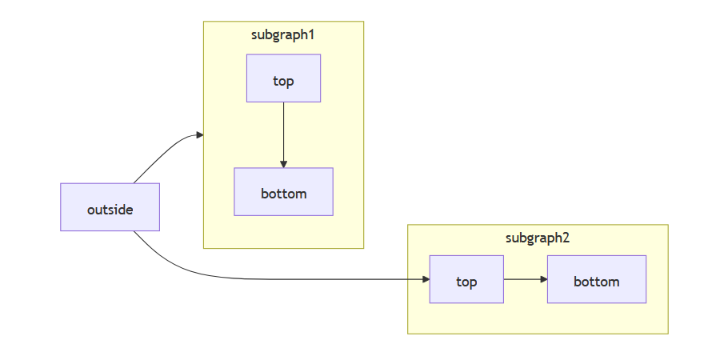</p>
<p><strong>子图嵌套</strong>：子图可以互相嵌套，形成多层级的结构，帮助表达更复杂的逻辑。这里就不示例，感觉一般用不到。</p>
<h4 id="注释">注释</h4>
<p>可以在流程图中输入注释，解析器将忽略这些注释。注释需要单独占一行，并且必须以<code>%%</code>（双百分号）开头。注释内容从注释开始到下一个换行符之间的任何文本都将被视为注释，包括任何流程语法。</p>
<h4 id="样式和类">样式和类</h4>
<p>略，用到再说</p>
<h4 id="关于空格">关于空格</h4>
<p>节点和链接之间允许单个空格。但是，节点与其文本之间以及链接与其文本之间不得存在空格。图表边缘的新声明如下所示，该声明也与旧的图表边缘声明有效。</p>
<p>这里区分了三种情况：</p>
<p><strong>✅ 允许的情况：节点和链接之间可以有1个空格</strong></p>
<ul>
<li><strong>节点</strong> 指的是像 <code>A</code>、<code>B</code> 这样的标识符。</li>
<li><strong>链接</strong> 指的是箭头符号如 <code>--&gt;</code>、<code>---</code>、<code>==&gt;</code> 等。</li>
<li>例子：<br>
<code>A --&gt; B</code>   （<code>A</code> 和 <code>--&gt;</code> 之间有一个空格，<code>--&gt;</code> 和 <code>B</code> 之间也有一个空格）<br>
这是<strong>有效</strong>的，也是目前最常见的写法。</li>
</ul>
<blockquote>
<p>注意：“允许单个空格”通常意味着可以没有空格，也可以有一个空格，但不能有多个连续空格（虽然多个空格一般也会被忽略，但官方建议只用0或1个）。</p>
</blockquote>
<p><strong>❌ 不允许的情况：节点与其文本之间不得有空格</strong></p>
<p>这里“文本”指的是写在 <code>[ ]</code> 或 <code>( )</code> 等括号内的<strong>节点显示标签</strong>。</p>
<ul>
<li>正确写法：<code>A[这是一个节点]</code> —— <code>A</code> 和 <code>[</code> 之间<strong>没有空格</strong>。</li>
<li>错误写法：<code>A [这是一个节点]</code> —— 插入空格会导致解析错误，Mermaid 会把 <code>A</code> 和后面的部分当作两个东西。</li>
</ul>
<p><strong>但是有一个特例，就是链接与其文本</strong>：以 <code>--文本--&gt;</code> 这种写法为例，<code>--</code> 和 <code>文本</code> 之间是<strong>必须有一个空格</strong>的，所以这里“不得存在空格”似乎矛盾。实际上 Mermaid 语法有两种添加文本的方式：</p>
<ol>
<li><code>-- 文本 --&gt;</code>（文本前后各有一个空格）</li>
<li><code>--&gt;|文本|</code>（竖线内无空格）</li>
</ol>
<h3 id="📝-实际代码">📝 实际代码</h3>
<p>代码如下</p>
<figure class="highlight plaintext"><table><tr><td class="gutter"><pre><span class="line">1</span><br><span class="line">2</span><br><span class="line">3</span><br><span class="line">4</span><br><span class="line">5</span><br><span class="line">6</span><br><span class="line">7</span><br><span class="line">8</span><br><span class="line">9</span><br><span class="line">10</span><br><span class="line">11</span><br><span class="line">12</span><br><span class="line">13</span><br><span class="line">14</span><br><span class="line">15</span><br><span class="line">16</span><br><span class="line">17</span><br><span class="line">18</span><br><span class="line">19</span><br><span class="line">20</span><br><span class="line">21</span><br><span class="line">22</span><br><span class="line">23</span><br><span class="line">24</span><br><span class="line">25</span><br><span class="line">26</span><br><span class="line">27</span><br><span class="line">28</span><br><span class="line">29</span><br><span class="line">30</span><br><span class="line">31</span><br><span class="line">32</span><br></pre></td><td class="code"><pre><span class="line">flowchart TD</span><br><span class="line">    %% --- 左侧分支：表型数据处理 ---</span><br><span class="line">    subgraph Phenotype_Process [表型数据预处理]</span><br><span class="line">        direction TB</span><br><span class="line">        P1[表型数据] --&gt; P2[剔除缺失值]</span><br><span class="line">        P2 --&gt; P3[描述性统计&lt;br/&gt;正态性检验]</span><br><span class="line">    end</span><br><span class="line"></span><br><span class="line">    %% --- 右侧分支：基因型数据处理 ---</span><br><span class="line">    subgraph Genotype_Process [基因型数据预处理]</span><br><span class="line">        direction TB</span><br><span class="line">        G1[基因型数据] --&gt; G2[质控]</span><br><span class="line">        G2 --&gt; G3[填充]</span><br><span class="line">        </span><br><span class="line">        %% 这里分叉：填充之后同时指向两个方向</span><br><span class="line">        G3 --&gt; G4[群体结构分析]</span><br><span class="line">        G3 --&gt; G5[亲缘关系矩阵]</span><br><span class="line">    end</span><br><span class="line"></span><br><span class="line">    %% --- 底部汇合与输出 ---</span><br><span class="line">    %% 注意：这里用 P3 和 G4 作为汇聚点</span><br><span class="line">    P3 --&gt; GWAS</span><br><span class="line">    G4 --&gt; GWAS</span><br><span class="line">    </span><br><span class="line">    GWAS[全基因组关联分析] --&gt; LOC[候选基因定位]</span><br><span class="line"></span><br><span class="line">    %% --- 样式设置 (可选，为了让图更好看) ---</span><br><span class="line">    classDef default fill:#4285F4,stroke:#333,stroke-width:2px,color:#fff;</span><br><span class="line">    classDef subgraphStyle fill:#E8F0FE,stroke:#4285F4,stroke-dasharray: 5 5;</span><br><span class="line">    </span><br><span class="line">    class P1,P2,P3,G1,G2,G3,G4,G5,GWAS,LOC default;</span><br><span class="line">    class Phenotype_Process,Genotype_Process subgraphStyle;</span><br></pre></td></tr></table></figure>
<p>显示效果如下</p>
<p>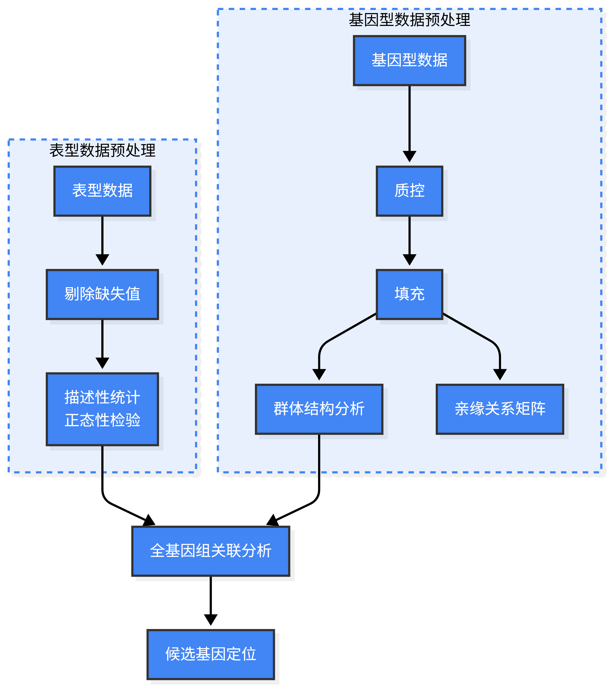</p>
<p>代码解析如下：</p>
<ul>
<li>文本框内<code>&lt;br/&gt;</code> （写成<code>&lt;br&gt;</code> 更符合 HTML 规范 ）实现了节点内的文本换行。
<ul>
<li>这种 HTML 语法能生效的关键在于<strong>Mermaid 有没有把这个节点文本当 HTML 解析，还是当纯文本</strong>。</li>
<li>因此，要让 <code>&lt;br/&gt;</code> 生效，你需要将配置 <code>securityLevel</code> 设置为 <code>loose</code>（宽松），明确告诉 Mermaid：“请允许我使用 HTML 标签来增强图表效果”。大多数现代浏览器 / mermaid.live 网址都是这个设置</li>
</ul>
</li>
<li>注意，这里是子图的节点与外部链接，因此这里子图方向将被忽略。</li>
</ul>
<p>样式设置解析如下</p>
<figure class="highlight plaintext"><table><tr><td class="gutter"><pre><span class="line">1</span><br><span class="line">2</span><br><span class="line">3</span><br><span class="line">4</span><br><span class="line">5</span><br><span class="line">6</span><br></pre></td><td class="code"><pre><span class="line">%% --- 样式设置 (可选，为了让图更好看) ---</span><br><span class="line">classDef default fill:#4285F4,stroke:#333,stroke-width:2px,color:#fff;</span><br><span class="line">classDef subgraphStyle fill:#E8F0FE,stroke:#4285F4,stroke-dasharray: 5 5;</span><br><span class="line"></span><br><span class="line">class P1,P2,P3,G1,G2,G3,G4,G5,GWAS,LOC default;</span><br><span class="line">class Phenotype_Process,Genotype_Process subgraphStyle;</span><br></pre></td></tr></table></figure>
<p>语法说明</p>
<table>
<thead>
<tr>
<th style="text-align:left"><strong>语法</strong></th>
<th style="text-align:left"><strong>含义</strong></th>
</tr>
</thead>
<tbody>
<tr>
<td style="text-align:left"><code>classDef 名字 样式</code></td>
<td style="text-align:left">定义一个&quot;样式模板&quot;（像CSS类）</td>
</tr>
<tr>
<td style="text-align:left"><code>fill:</code>/ <code>stroke:</code>/ <code>color:</code></td>
<td style="text-align:left">填充色 / 边框色 / 文字色</td>
</tr>
<tr>
<td style="text-align:left"><code>stroke-dasharray: 5 5</code></td>
<td style="text-align:left">虚线边框（让子图框变成点划线）</td>
</tr>
<tr>
<td style="text-align:left"><code>class A,B,C 名字</code></td>
<td style="text-align:left">把样式模板应用到一批节点</td>
</tr>
</tbody>
</table>
<p>内容说明</p>
<ul>
<li><strong>classDef default</strong>：定义名为 <code>default</code> 的样式类。
<ul>
<li>蓝色填充（<code>#4285F4</code>），深灰边框 2px，文字白色。</li>
</ul>
</li>
<li><strong>classDef subgraphStyle</strong>：定义子图容器样式。
<ul>
<li>浅蓝填充（<code>#E8F0FE</code>），蓝色实线边框，虚线风格（<code>stroke-dasharray: 5 5</code>，，<strong>让边框线变成&quot;画5单位、空5单位&quot;循环的标准等距虚线</strong>，这里的单位应该默认是像素）。</li>
</ul>
</li>
<li><strong>class 节点列表 default</strong>：将列出的所有节点（P1…LOC）应用 <code>default</code> 样式。</li>
<li><strong>class 子图ID subgraphStyle</strong>：将两个子图的容器（边框和背景）应用虚线浅蓝样式。</li>
</ul>
<h3 id="📚-学习资源">📚 学习资源</h3>
<ul>
<li><strong>官方文档</strong>：<a target="_blank" rel="noopener" href="https://mermaid.js.org/">mermaid.js.org</a> 包含完整的语法说明。</li>
<li><strong>在线编辑器</strong>：<a target="_blank" rel="noopener" href="https://mermaid.live/">mermaid.live</a> 可实时编写并导出 SVG/PNG。有一个中文网址 <a target="_blank" rel="noopener" href="https://www.min2k.com/intro/online-mermaid.html">https://www.min2k.com/intro/online-mermaid.html</a> （需要 VIP 才能输出大图）</li>
<li><strong>集成方式</strong>：在 GitHub 的 <code>README.md</code> 中写 <code>```mermaid</code> 代码块即可直接渲染。</li>
</ul>
<p>总之，Mermaid 语法就是用一种<strong>接近自然语言的简单规则</strong>来描述图表，让非设计师也能快速生成清晰、可维护的图表。如果你写过 Markdown 或 Python 的缩进式代码，上手 Mermaid 会非常快。</p>
<h2 id="Mermaid官网介绍">Mermaid官网介绍</h2>
<p>官方网址是英文，我还是在中文网站（网址3）先看中文吧。</p>
<h3 id="图表类型">图表类型</h3>
<p>这里是给出了所有的图表类型。我目前除了流程图，其他都用不到。</p>
<h4 id="流程图-Flowchart">流程图 - Flowchart</h4>
<figure class="highlight plaintext"><table><tr><td class="gutter"><pre><span class="line">1</span><br><span class="line">2</span><br><span class="line">3</span><br><span class="line">4</span><br><span class="line">5</span><br></pre></td><td class="code"><pre><span class="line">graph TD;</span><br><span class="line">    A--&gt;B;</span><br><span class="line">    A--&gt;C;</span><br><span class="line">    B--&gt;D;</span><br><span class="line">    C--&gt;D;</span><br></pre></td></tr></table></figure>
<h4 id="序列图-Sequence-diagram">序列图 - Sequence diagram</h4>
<p>描述<strong>谁先说话、谁回应、消息按什么顺序飞</strong>：</p>
<figure class="highlight plaintext"><table><tr><td class="gutter"><pre><span class="line">1</span><br><span class="line">2</span><br><span class="line">3</span><br><span class="line">4</span><br><span class="line">5</span><br><span class="line">6</span><br><span class="line">7</span><br><span class="line">8</span><br><span class="line">9</span><br><span class="line">10</span><br><span class="line">11</span><br><span class="line">12</span><br></pre></td><td class="code"><pre><span class="line">sequenceDiagram</span><br><span class="line">    participant Alice</span><br><span class="line">    participant Bob</span><br><span class="line">    Alice-&gt;&gt;John: Hello John, how are you?</span><br><span class="line">    loop HealthCheck</span><br><span class="line">        John-&gt;&gt;John: Fight against hypochondria</span><br><span class="line">    end</span><br><span class="line">    Note right of John: Rational thoughts &lt;br/&gt;prevail!</span><br><span class="line">    John--&gt;&gt;Alice: Great!</span><br><span class="line">    John-&gt;&gt;Bob: How about you?</span><br><span class="line">    Bob--&gt;&gt;John: Jolly good!</span><br><span class="line"></span><br></pre></td></tr></table></figure>
<h3 id="流程图-基本语法">流程图-基本语法</h3>
<p>感觉太乱了，放个网址在这里。其实上面的教程我基本上写完了，这里只是放下网址方便后面有需要再查找。</p>
<p>中文：<a target="_blank" rel="noopener" href="https://docs.min2k.com/zh/mermaid/syntax/flowchart.html">https://docs.min2k.com/zh/mermaid/syntax/flowchart.html</a></p>
<p>英文：<a target="_blank" rel="noopener" href="https://mermaid.js.org/syntax/flowchart.html">https://mermaid.js.org/syntax/flowchart.html</a></p>
<h3 id="网页使用Mermaid语法">网页使用Mermaid语法</h3>
<p>它的原理很简单：核心就是一个JavaScript库，你只需在HTML中引入这个库，并把你写好的Mermaid代码放进 <code>&lt;pre class=&quot;mermaid&quot;&gt;</code> 这样的标签里，图表在页面加载时就会被自动渲染出来。</p>
<p><strong>1. 引入Mermaid</strong></p>
<p>在HTML文件的<code>&lt;body&gt;</code>标签末尾附近，添加以下<code>&lt;script&gt;</code>代码块：</p>
<figure class="highlight html"><table><tr><td class="gutter"><pre><span class="line">1</span><br><span class="line">2</span><br><span class="line">3</span><br><span class="line">4</span><br></pre></td><td class="code"><pre><span class="line"><span class="tag">&lt;<span class="name">script</span> <span class="attr">type</span>=<span class="string">&quot;module&quot;</span>&gt;</span><span class="language-javascript"></span></span><br><span class="line"><span class="language-javascript">    <span class="keyword">import</span> mermaid <span class="keyword">from</span> <span class="string">&#x27;https://cdn.jsdelivr.net/npm/mermaid@11/dist/mermaid.esm.min.mjs&#x27;</span>;</span></span><br><span class="line"><span class="language-javascript">    mermaid.<span class="title function_">initialize</span>(&#123; <span class="attr">startOnLoad</span>: <span class="literal">true</span> &#125;);</span></span><br><span class="line"><span class="language-javascript"></span><span class="tag">&lt;/<span class="name">script</span>&gt;</span></span><br></pre></td></tr></table></figure>
<p><strong>2. 放置图表代码</strong></p>
<p>在你希望图表出现的位置，用带有<code>class=&quot;mermaid&quot;</code>的<code>&lt;pre&gt;</code>或<code>&lt;div&gt;</code>标签包裹你的Mermaid代码即可：</p>
<figure class="highlight html"><table><tr><td class="gutter"><pre><span class="line">1</span><br><span class="line">2</span><br><span class="line">3</span><br><span class="line">4</span><br><span class="line">5</span><br><span class="line">6</span><br></pre></td><td class="code"><pre><span class="line"><span class="tag">&lt;<span class="name">pre</span> <span class="attr">class</span>=<span class="string">&quot;mermaid&quot;</span>&gt;</span></span><br><span class="line">    graph TD</span><br><span class="line">    A[开始] --&gt; B&#123;判断条件&#125;</span><br><span class="line">    B --&gt;|是| C[执行操作]</span><br><span class="line">    B --&gt;|否| D[结束]</span><br><span class="line"><span class="tag">&lt;/<span class="name">pre</span>&gt;</span></span><br></pre></td></tr></table></figure>
<p><code>&lt;pre&gt;</code> 是 HTML 中的一个标签，全称是 <strong>Preformatted Text</strong>（预格式化文本）。它的核心作用是<strong>保留你在代码中写入的所有空格、制表符和换行</strong>，并以等宽字体显示内容。通常是用来显示代码或预排文字。</p>
<p><strong>⚙️ 额外配置</strong></p>
<p><code>mermaid.initialize(&#123; startOnLoad: true &#125;)</code>这行代码是初始化图表的。你还可以在里面进行自定义，比如使用以下配置来开启一个更严格但也更安全（允许节点内的HTML标签）的渲染模式：</p>
<figure class="highlight html"><table><tr><td class="gutter"><pre><span class="line">1</span><br><span class="line">2</span><br><span class="line">3</span><br><span class="line">4</span><br><span class="line">5</span><br><span class="line">6</span><br><span class="line">7</span><br></pre></td><td class="code"><pre><span class="line"><span class="tag">&lt;<span class="name">script</span> <span class="attr">type</span>=<span class="string">&quot;module&quot;</span>&gt;</span><span class="language-javascript"></span></span><br><span class="line"><span class="language-javascript">    <span class="keyword">import</span> mermaid <span class="keyword">from</span> <span class="string">&#x27;https://cdn.jsdelivr.net/npm/mermaid@11/dist/mermaid.esm.min.mjs&#x27;</span>;</span></span><br><span class="line"><span class="language-javascript">    mermaid.<span class="title function_">initialize</span>(&#123; </span></span><br><span class="line"><span class="language-javascript">        <span class="attr">startOnLoad</span>: <span class="literal">true</span>, </span></span><br><span class="line"><span class="language-javascript">        <span class="attr">securityLevel</span>: <span class="string">&#x27;loose&#x27;</span> </span></span><br><span class="line"><span class="language-javascript">    &#125;);</span></span><br><span class="line"><span class="language-javascript"></span><span class="tag">&lt;/<span class="name">script</span>&gt;</span></span><br></pre></td></tr></table></figure>
<ul>
<li><code>startOnLoad: true</code> ： 含义：<strong>页面加载完成后自动开始渲染</strong>所有带有 <code>class=&quot;mermaid&quot;</code> 的元素（<strong>这是默认值，可以不用写</strong>）。如果设为 <code>false</code>，则需要自己调用 <code>mermaid.run()</code> 或 <code>mermaid.contentLoaded()</code> 来触发渲染。</li>
<li><code>securityLevel: 'loose'</code>  ： 控制Mermaid的<strong>安全策略</strong>，决定图表中的文本是否可以包含HTML标签。
<ul>
<li><code>'strict'</code>（默认）：禁用图表文本内的HTML标签（如 <code>&lt;br&gt;</code>、<code>&lt;b&gt;</code>），防止XSS攻击。</li>
<li><code>'loose'</code>：<strong>允许</strong>使用HTML标签和更丰富的文本格式（比如换行、加粗、字体颜色等）。</li>
<li><code>'sandbox'</code>：最严格的安全级别，将所有内容放到沙盒中处理，基本禁用HTML渲染。</li>
</ul>
</li>
</ul>
<p>最小完整示例代码如下</p>
<figure class="highlight html"><table><tr><td class="gutter"><pre><span class="line">1</span><br><span class="line">2</span><br><span class="line">3</span><br><span class="line">4</span><br><span class="line">5</span><br><span class="line">6</span><br><span class="line">7</span><br><span class="line">8</span><br><span class="line">9</span><br><span class="line">10</span><br><span class="line">11</span><br><span class="line">12</span><br><span class="line">13</span><br><span class="line">14</span><br></pre></td><td class="code"><pre><span class="line"><span class="meta">&lt;!doctype <span class="keyword">html</span>&gt;</span></span><br><span class="line"><span class="tag">&lt;<span class="name">html</span> <span class="attr">lang</span>=<span class="string">&quot;en&quot;</span>&gt;</span></span><br><span class="line">  <span class="tag">&lt;<span class="name">body</span>&gt;</span></span><br><span class="line">    <span class="tag">&lt;<span class="name">pre</span> <span class="attr">class</span>=<span class="string">&quot;mermaid&quot;</span>&gt;</span></span><br><span class="line">  graph LR</span><br><span class="line">      A --- B</span><br><span class="line">      B--&gt;C[fa:fa-ban forbidden]</span><br><span class="line">      B--&gt;D(fa:fa-spinner);</span><br><span class="line">    <span class="tag">&lt;/<span class="name">pre</span>&gt;</span></span><br><span class="line">    <span class="tag">&lt;<span class="name">script</span> <span class="attr">type</span>=<span class="string">&quot;module&quot;</span>&gt;</span><span class="language-javascript"></span></span><br><span class="line"><span class="language-javascript">      <span class="keyword">import</span> mermaid <span class="keyword">from</span> <span class="string">&#x27;https://cdn.jsdelivr.net/npm/mermaid@11/dist/mermaid.esm.min.mjs&#x27;</span>;</span></span><br><span class="line"><span class="language-javascript">    </span><span class="tag">&lt;/<span class="name">script</span>&gt;</span></span><br><span class="line">  <span class="tag">&lt;/<span class="name">body</span>&gt;</span></span><br><span class="line"><span class="tag">&lt;/<span class="name">html</span>&gt;</span></span><br></pre></td></tr></table></figure>
<h1>参考文献</h1>
<ol>
<li><a target="_blank" rel="noopener" href="https://zhuanlan.zhihu.com/p/115821818">https://zhuanlan.zhihu.com/p/115821818</a></li>
<li><a target="_blank" rel="noopener" href="https://blog.csdn.net/qq_36761831/article/details/83387377">https://blog.csdn.net/qq_36761831/article/details/83387377</a></li>
<li><a target="_blank" rel="noopener" href="https://docs.min2k.com/zh/mermaid/intro/">https://docs.min2k.com/zh/mermaid/intro/</a></li>
</ol>
 
      <!-- reward -->
      
    </div>
    

    <!-- copyright -->
    
    <div class="declare">
      <ul class="post-copyright">
        <li>
          <i class="ri-copyright-line"></i>
          <strong>版权声明： </strong>
          
          本博客所有文章除特别声明外，著作权归作者所有。转载请注明出处！
          
        </li>
      </ul>
    </div>
    
    <footer class="article-footer">
       
    </footer>
  </div>

   
  <nav class="article-nav">
    
      <a href="/posts/c55bbe83/" class="article-nav-link">
        <strong class="article-nav-caption">上一篇</strong>
        <div class="article-nav-title">
          
            特征选择-Boruta算法
          
        </div>
      </a>
    
    
      <a href="/posts/93d1ac22/" class="article-nav-link">
        <strong class="article-nav-caption">下一篇</strong>
        <div class="article-nav-title">CSV文件要不要使用UTF-8-BOM字符编码</div>
      </a>
    
  </nav>

  
   
     
</article>

</section>
      <footer class="footer">
  <div class="outer">
    <ul>
      <li>
        Copyrights &copy;
        2019-2026
        <i class="ri-heart-fill heart_icon"></i> Vincere Zhou
      </li>
    </ul>
    <ul>
      <li>
        
        
        <span>
  <span><i class="ri-user-3-fill"></i>访问人数:<span id="busuanzi_value_site_uv"></span></s>
  <span class="division">|</span>
  <span><i class="ri-eye-fill"></i>浏览次数:<span id="busuanzi_value_page_pv"></span></span>
</span>
        
      </li>
    </ul>
    <ul>
      
    </ul>
    <ul>
      
    </ul>
    <ul>
      <li>
        <!-- cnzz统计 -->
        
      </li>
    </ul>

    <!-- 与只只在一起天数 -->
	<ul>
		<li><span id="lovetime_span"></span></li>
	</ul>
    <script type="text/javascript">			
        function show_runtime() {
            window.setTimeout("show_runtime()", 1000);
            X = new Date("03/04/2021 22:11:00");
            Y = new Date();
            T = (Y.getTime() - X.getTime());
            M = 24 * 60 * 60 * 1000;
            a = T / M;
            A = Math.floor(a);
            b = (a - A) * 24;
            B = Math.floor(b);
            c = (b - B) * 60;
            C = Math.floor((b - B) * 60);
            D = Math.floor((c - C) * 60);
            lovetime_span.innerHTML = "只只和男朋友在一起了 " + A + "天" + B + "小时" + C + "分" + D + "秒"
        }
        show_runtime();
    </script>

  </div>
</footer>
      <div class="float_btns">
        <div class="totop" id="totop">
  <i class="ri-arrow-up-line"></i>
</div>

      </div>
    </main>
    <aside class="sidebar on">
      <button class="navbar-toggle"></button>
<nav class="navbar">
  
  <div class="logo">
    <a href="/"></a>
  </div>
  
  <ul class="nav nav-main">
    
    <li class="nav-item">
      <a class="nav-item-link" href="/">主页</a>
    </li>
    
    <li class="nav-item">
      <a class="nav-item-link" href="/archives">归档</a>
    </li>
    
    <li class="nav-item">
      <a class="nav-item-link" href="/categories">分类</a>
    </li>
    
    <li class="nav-item">
      <a class="nav-item-link" href="/tags">标签</a>
    </li>
    
    <li class="nav-item">
      <a class="nav-item-link" href="/friends">友链</a>
    </li>
    
    <li class="nav-item">
      <a class="nav-item-link" href="/about">关于</a>
    </li>
    
  </ul>
</nav>
<nav class="navbar navbar-bottom">
  <ul class="nav">
    <li class="nav-item">
      
      <a class="nav-item-link nav-item-search"  title="搜索">
        <i class="ri-search-line"></i>
      </a>
      
      
      <a class="nav-item-link" target="_blank" href="/atom.xml" title="RSS Feed">
        <i class="ri-rss-line"></i>
      </a>
      
    </li>
  </ul>
</nav>
<div class="search-form-wrap">
  <div class="local-search local-search-plugin">
  <input type="search" id="local-search-input" class="local-search-input" placeholder="Search...">
  <div id="local-search-result" class="local-search-result"></div>
</div>
</div>
    </aside>
    <script>
      if (window.matchMedia("(max-width: 768px)").matches) {
        document.querySelector('.content').classList.remove('on');
        document.querySelector('.sidebar').classList.remove('on');
      }
    </script>
    <div id="mask"></div>

<!-- #reward -->
<div id="reward">
  <span class="close"><i class="ri-close-line"></i></span>
  <p class="reward-p"><i class="ri-cup-line"></i>请我喝杯茶吧~</p>
  <div class="reward-box">
    
    <div class="reward-item">
      
      <span class="reward-type">支付宝</span>
    </div>
    
    
    <div class="reward-item">
      
      <span class="reward-type">微信</span>
    </div>
    
  </div>
</div>
    
<script src="/js/jquery-2.0.3.min.js"></script>


<script src="/js/lazyload.min.js"></script>

<!-- Tocbot -->


<script src="/js/tocbot.min.js"></script>

<script>
  tocbot.init({
    tocSelector: '.tocbot',
    contentSelector: '.article-entry',
    headingSelector: 'h1, h2, h3, h4, h5, h6',
    hasInnerContainers: true,
    scrollSmooth: true,
    scrollContainer: 'main',
    positionFixedSelector: '.tocbot',
    positionFixedClass: 'is-position-fixed',
    fixedSidebarOffset: 'auto'
  });
</script>

<script src="https://cdn.jsdelivr.net/npm/jquery-modal@0.9.2/jquery.modal.min.js"></script>
<link rel="stylesheet" href="https://cdn.jsdelivr.net/npm/jquery-modal@0.9.2/jquery.modal.min.css">
<script src="https://cdn.jsdelivr.net/npm/justifiedGallery@3.7.0/dist/js/jquery.justifiedGallery.min.js"></script>

<script src="/dist/main.js"></script>

<!-- ImageViewer -->

<!-- Root element of PhotoSwipe. Must have class pswp. -->
<div class="pswp" tabindex="-1" role="dialog" aria-hidden="true">

    <!-- Background of PhotoSwipe. 
         It's a separate element as animating opacity is faster than rgba(). -->
    <div class="pswp__bg"></div>

    <!-- Slides wrapper with overflow:hidden. -->
    <div class="pswp__scroll-wrap">

        <!-- Container that holds slides. 
            PhotoSwipe keeps only 3 of them in the DOM to save memory.
            Don't modify these 3 pswp__item elements, data is added later on. -->
        <div class="pswp__container">
            <div class="pswp__item"></div>
            <div class="pswp__item"></div>
            <div class="pswp__item"></div>
        </div>

        <!-- Default (PhotoSwipeUI_Default) interface on top of sliding area. Can be changed. -->
        <div class="pswp__ui pswp__ui--hidden">

            <div class="pswp__top-bar">

                <!--  Controls are self-explanatory. Order can be changed. -->

                <div class="pswp__counter"></div>

                <button class="pswp__button pswp__button--close" title="Close (Esc)"></button>

                <button class="pswp__button pswp__button--share" style="display:none" title="Share"></button>

                <button class="pswp__button pswp__button--fs" title="Toggle fullscreen"></button>

                <button class="pswp__button pswp__button--zoom" title="Zoom in/out"></button>

                <!-- Preloader demo http://codepen.io/dimsemenov/pen/yyBWoR -->
                <!-- element will get class pswp__preloader--active when preloader is running -->
                <div class="pswp__preloader">
                    <div class="pswp__preloader__icn">
                        <div class="pswp__preloader__cut">
                            <div class="pswp__preloader__donut"></div>
                        </div>
                    </div>
                </div>
            </div>

            <div class="pswp__share-modal pswp__share-modal--hidden pswp__single-tap">
                <div class="pswp__share-tooltip"></div>
            </div>

            <button class="pswp__button pswp__button--arrow--left" title="Previous (arrow left)">
            </button>

            <button class="pswp__button pswp__button--arrow--right" title="Next (arrow right)">
            </button>

            <div class="pswp__caption">
                <div class="pswp__caption__center"></div>
            </div>

        </div>

    </div>

</div>

<link rel="stylesheet" href="https://cdn.jsdelivr.net/npm/photoswipe@4.1.3/dist/photoswipe.min.css">
<link rel="stylesheet" href="https://cdn.jsdelivr.net/npm/photoswipe@4.1.3/dist/default-skin/default-skin.min.css">
<script src="https://cdn.jsdelivr.net/npm/photoswipe@4.1.3/dist/photoswipe.min.js"></script>
<script src="https://cdn.jsdelivr.net/npm/photoswipe@4.1.3/dist/photoswipe-ui-default.min.js"></script>

<script>
    function viewer_init() {
        let pswpElement = document.querySelectorAll('.pswp')[0];
        let $imgArr = document.querySelectorAll(('.article-entry img:not(.reward-img)'))

        $imgArr.forEach(($em, i) => {
            $em.onclick = () => {
                // slider展开状态
                // todo: 这样不好，后面改成状态
                if (document.querySelector('.left-col.show')) return
                let items = []
                $imgArr.forEach(($em2, i2) => {
                    let img = $em2.getAttribute('data-idx', i2)
                    let src = $em2.getAttribute('data-target') || $em2.getAttribute('src')
                    let title = $em2.getAttribute('alt')
                    // 获得原图尺寸
                    const image = new Image()
                    image.src = src
                    items.push({
                        src: src,
                        w: image.width || $em2.width,
                        h: image.height || $em2.height,
                        title: title
                    })
                })
                var gallery = new PhotoSwipe(pswpElement, PhotoSwipeUI_Default, items, {
                    index: parseInt(i)
                });
                gallery.init()
            }
        })
    }
    viewer_init()
</script>

<!-- MathJax -->

<!-- Katex -->

<!-- busuanzi  -->


<script src="/js/busuanzi-2.3.pure.min.js"></script>


<!-- ClickLove -->

<!-- ClickBoom1 -->

<!-- ClickBoom2 -->

<!-- CodeCopy -->


<link rel="stylesheet" href="/css/clipboard.css">

<script src="https://cdn.jsdelivr.net/npm/clipboard@2/dist/clipboard.min.js"></script>
<script>
  function wait(callback, seconds) {
    var timelag = null;
    timelag = window.setTimeout(callback, seconds);
  }
  !function (e, t, a) {
    var initCopyCode = function(){
      var copyHtml = '';
      copyHtml += '<button class="btn-copy" data-clipboard-snippet="">';
      copyHtml += '<i class="ri-file-copy-2-line"></i><span>COPY</span>';
      copyHtml += '</button>';
      $(".highlight .code pre").before(copyHtml);
      $(".article pre code").before(copyHtml);
      var clipboard = new ClipboardJS('.btn-copy', {
        target: function(trigger) {
          return trigger.nextElementSibling;
        }
      });
      clipboard.on('success', function(e) {
        let $btn = $(e.trigger);
        $btn.addClass('copied');
        let $icon = $($btn.find('i'));
        $icon.removeClass('ri-file-copy-2-line');
        $icon.addClass('ri-checkbox-circle-line');
        let $span = $($btn.find('span'));
        $span[0].innerText = 'COPIED';
        
        wait(function () { // 等待两秒钟后恢复
          $icon.removeClass('ri-checkbox-circle-line');
          $icon.addClass('ri-file-copy-2-line');
          $span[0].innerText = 'COPY';
        }, 2000);
      });
      clipboard.on('error', function(e) {
        e.clearSelection();
        let $btn = $(e.trigger);
        $btn.addClass('copy-failed');
        let $icon = $($btn.find('i'));
        $icon.removeClass('ri-file-copy-2-line');
        $icon.addClass('ri-time-line');
        let $span = $($btn.find('span'));
        $span[0].innerText = 'COPY FAILED';
        
        wait(function () { // 等待两秒钟后恢复
          $icon.removeClass('ri-time-line');
          $icon.addClass('ri-file-copy-2-line');
          $span[0].innerText = 'COPY';
        }, 2000);
      });
    }
    initCopyCode();
  }(window, document);
</script>


<!-- CanvasBackground -->


    
  </div>
<script src="/live2dw/lib/L2Dwidget.min.js?094cbace49a39548bed64abff5988b05"></script><script>L2Dwidget.init({"pluginRootPath":"live2dw/","pluginJsPath":"lib/","pluginModelPath":"assets/","tagMode":false,"debug":false,"model":{"jsonPath":"/live2dw/assets/wanko.model.json"},"display":{"position":"left","width":150,"height":300,"hOffset":80,"vOffset":-70},"mobile":{"show":false,"scale":0.5},"log":false});</script></body>

</html>